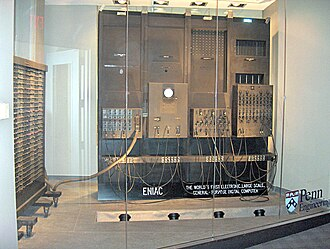
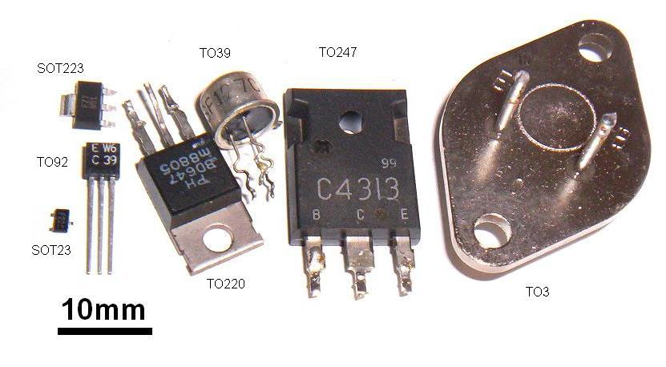
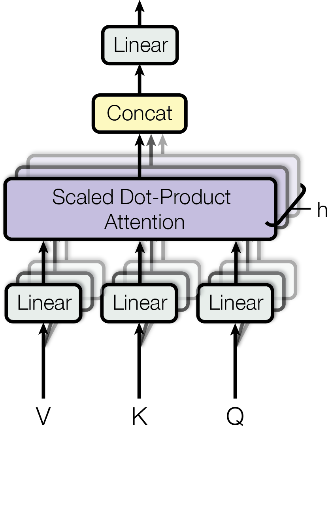

The timeline, cause by cause
Ninety years of computing, oldest first. Each milestone is coloured by the floor of the tower it belongs to — and for almost every one, there is a real need that forced it into existence. The army needed firing tables; the phone company needed a reliable switch; the air force and NASA needed computers small enough to fly. Read the "why" lines: that is where the story lives.
Turing's machine — computing is born on paper
Alan Turing describes an abstract machine that can carry out any calculation by reading and writing symbols on a tape — the blueprint every real computer still follows.
Why it happened: mathematicians were trying to settle whether every true statement could be proved automatically (the Entscheidungsproblem). To answer "no", Turing first had to define exactly what "a machine following steps" means. Floor 1ENIAC — the first general-purpose electronic computer
Built at the University of Pennsylvania for the US Army: ~17,000 vacuum tubes, 30 tons, about 5,000 additions a second. It proved a machine could compute at electronic speed.
Why it happened: World War II artillery needed firing tables — thousands of trajectory calculations per gun. Human "computers" with desk calculators couldn't keep up, so the army funded an electronic one.
The stored-program idea (von Neumann report)
John von Neumann's EDVAC report sets out keeping a computer's instructions in memory alongside its data, so it can be reprogrammed by loading new instructions instead of being rewired.
Why it happened: ENIAC was reprogrammed by physically replugging cables for days. The obvious fix: store the program as numbers, like the data. Floor 3The transistor — the solid-state switch
At Bell Labs, Bardeen, Brattain and Shockley build the first transistor: a switch with no glass and no vacuum, just solid material. Smaller, cooler, faster, far more reliable than a tube.
Why it happened: the telephone network ran on millions of vacuum tubes that burned out constantly. Bell Labs needed a switch/amplifier that wouldn't fail — and got the device that all modern electronics is built from.
Shannon's information theory — the "bit"
Claude Shannon shows that any information can be measured in bits and reliably sent over a noisy channel. The mathematical foundation of all digital communication and storage.
Why it happened: the phone company (again Bell Labs) wanted to know the hard limit on how much information a wire could carry. Shannon answered it — and accidentally founded the digital age. Floor 1The Dartmouth workshop — "Artificial Intelligence"
A summer workshop coins the term artificial intelligence and launches the field as a research goal.
Why it happened: with real computers now running, a group of researchers bet that "thinking" could be described precisely enough for a machine to do it. Floor 6FORTRAN — the first popular high-level language
Programmers could finally write formulas like A = B + C instead of raw machine numbers, and a compiler translated it. Software became something humans could read.
The integrated circuit (Kilby & Noyce)
Jack Kilby and Robert Noyce independently put several transistors onto a single chip — the integrated circuit, the ancestor of every processor.
Why it happened: the "tyranny of numbers" — complex machines needed so many separate parts soldered by hand that they became impossible to build reliably. Putting the parts on one chip was the escape. Floor 2Minuteman & Apollo — the military forces the chip into mass production
The Minuteman II missile's guidance computer and the Apollo Guidance Computer were among the first machines built almost entirely from integrated circuits. Government space and defence spending was roughly a third of the entire chip market through the 1960s.
Why it happened: a missile or a spacecraft needs a computer that is tiny, light, low-power and rugged. Only the integrated circuit could do that — so the military and NASA bought enough of them to make chips cheap for everyone else. The clearest case of a need shaping the hardware. Floor 2IBM System/360 — one compatible family
IBM "bet the company" on a whole range of computers, small to large, that all ran the same software and used the same peripherals. The idea of a compatible computer architecture.
Why it happened: every IBM model so far needed its own programs. Customers who outgrew a machine had to rewrite everything. A common architecture let software and skills carry across — and locked customers in. Floor 3ARPANET — the first packet-switched network
Four US university computers are linked into a network that chops messages into packets routed independently. The direct ancestor of the internet.
Why it happened: research computers were rare and expensive, and ARPA wanted scattered labs to share them. Packet switching also promised communication that could survive parts of the network being destroyed. Floor 4Unix — a small, portable operating system
Ken Thompson and Dennis Ritchie at Bell Labs build Unix: simple, made of small tools, and (rewritten in C in 1972) portable between machines. Its ideas live on in macOS, Android, Linux and the cloud.
Why it happened: their previous project, Multics, had grown bloated and complex. They wanted something lean enough for two people to run — and to play a game called Space Travel on. Floor 3The relational database (Edgar Codd)
Codd proposes storing data in simple linked tables, separated from how it's physically stored on disk. The foundation of SQL and almost every business data system since.
Why it happened: earlier databases hard-wired the data to its storage layout, so any change broke the programs. Codd wanted data independence — query the data without knowing how it's stored. Floor 5Intel 4004 — the first microprocessor
An entire CPU on one chip (~2,300 transistors), released 15 November 1971. It put a computer's brain onto a fingernail-sized piece of silicon.
Why it happened: the Japanese firm Busicom ordered custom chips for a desktop calculator. Intel's Ted Hoff suggested one general-purpose chip instead of many special ones — and the programmable microprocessor was born. Floor 2Ethernet & the TCP/IP design
Ethernet (Metcalfe, 1973) wires computers together in a building; Cerf and Kahn (1974) design TCP/IP, a way for different networks to interconnect.
Why it happened: by now there were several incompatible networks — ARPANET, radio nets, satellite nets. They needed a common language so any network could talk to any other. That "network of networks" is literally the inter-net. Floor 4The personal computer (Altair, Apple II)
The Altair 8800 (1975) and Apple II (1977) bring the microprocessor to hobbyists and homes — computers you could own.
Why it happened: the cheap microprocessor (1971) made a whole computer affordable for one person for the first time. Hardware drove a new kind of user. Floor 7TCP/IP switch-on & DNS — the internet takes shape
On 1 January 1983 ARPANET adopts TCP/IP for good. The same year, the Domain Name System (DNS) is introduced — the internet's phone book, turning names like example.com into numeric addresses.
HOSTS.TXT file that everyone copied by hand. DNS spread that lookup across thousands of cooperating servers so it could keep scaling.
Floor 4Apple Macintosh — the graphical interface for everyone
Building on ideas from Xerox PARC, the Macintosh sells a mouse, windows, icons and menus to ordinary people — no typed commands required.
Why it happened: command-line computers were powerful but intimidating; only specialists used them. To sell computers to everyone, the machine had to be operable without learning a language. Floor 7The World Wide Web (Tim Berners-Lee)
At CERN, Berners-Lee invents the web: pages, links and addresses (URLs) on top of the internet. Released to the public in 1991, free for anyone to use.
Why it happened: CERN's scientists used many incompatible computers and kept losing track of each other's documents. Berners-Lee wanted one simple way to link information across all of them.Linux — a free Unix-like kernel
Linus Torvalds releases the Linux kernel as open source. Today it runs most servers, all Android phones, and nearly every AI training cluster.
Why it happened: Unix was powerful but expensive and locked up by licences. Students and hobbyists wanted a free version they could read, change and run on a cheap PC. Floor 3Mosaic — the web becomes visual
The Mosaic browser shows images and text together in one window, making the web usable by non-technical people and triggering its explosive growth.
Why it happened: the early web was plain text. To reach a mass audience it needed to look like something — pictures, layout, a clickable page. Floor 7Google & PageRank — making sense of the web
Google ranks pages by how many other pages link to them, turning an unbrowsable web into something searchable in milliseconds.
Why it happened: the web had grown to millions of pages. Browsing by hand was hopeless; people needed an algorithm to find the good pages for them. Floor 5The cloud (Amazon Web Services)
AWS lets anyone rent computing power and storage by the hour instead of buying servers — computing becomes a utility, like electricity.
Why it happened: websites had wildly uneven demand, and buying servers for the busiest day wasted money the rest of the time. Renting elastic capacity solved it — and later made giant AI training affordable. Floor 4The iPhone — the internet in your pocket
Apple's iPhone replaces tiny plastic keyboards with a full multitouch screen and a real web browser, putting a powerful networked computer in a billion pockets.
Why it happened: phones could reach the internet but using it was miserable on a numeric keypad and a postage-stamp screen. The need was a phone that was really a computer you touch. Floor 7CUDA — unlocking the GPU for general math
NVIDIA releases CUDA, software that lets ordinary programs run on a GPU's thousands of cores — not just graphics.
Why it happened: scientists realised the graphics card was secretly a massively parallel math engine, but it was locked to drawing pixels. They needed a way to run their own calculations on it — the bridge that later made deep learning possible. Floor 3AlexNet — deep learning wins
A deep neural network trained on GPUs crushes the ImageNet image-recognition contest, beating hand-built methods by a huge margin and igniting the modern AI boom.
Why it happened: two ingredients finally arrived together — a huge labelled dataset (ImageNet) and cheap GPU compute (via CUDA). Neural networks, an old idea, suddenly had the fuel they needed. Floor 6★ "Attention Is All You Need" — the Transformer
Eight researchers at Google publish a new neural-network design built on self-attention: it reads an entire sequence at once, in parallel, instead of word by word. Every modern AI — ChatGPT, Claude, Gemini — is a Transformer.
Why it happened: the older networks (RNNs) read text one word at a time — slow to train and forgetful over long passages. Translation researchers needed a model that could look at all the words together and learn which ones matter to each other. Why it's the turn: attention is just linear algebra done in parallel — a change on Floor 1, the mathematics. Because every floor stands on Floor 1, that one change rippled up the whole tower. See the cascade →
BERT, GPT-2, GPT-3 — scaling the Transformer
Researchers discover that making Transformers bigger and feeding them more text keeps making them dramatically smarter. GPT-3 (2020) can write essays, code and answers from a plain prompt.
Why it happened: the 2017 design trained efficiently on GPUs, so for the first time it was practical to scale a language model up by 100× — and the results kept improving. Floor 6ChatGPT — AI reaches everyone
A simple chat box on top of a large Transformer reaches a hundred million users in two months — the fastest-adopted application in history.
Why it happened: the models were already capable; what was missing was an interface anyone could use. A chat box turned a research breakthrough into a product for the public — a Floor 7 moment. Floor 7NVIDIA DGX Spark — a personal AI supercomputer
Shipped in October 2025 for about $3,999 on the Grace Blackwell (GB10) chip, with a bigger sibling, the DGX Station. Data-centre-class AI power that sits on a desk.
Why it happened: once AI became the most valuable thing computers do, the demand flowed straight back down to the hardware floor — people wanted that power locally, not just rented in the cloud. Floor 2Apple names a hardware engineer as CEO
Apple announces that John Ternus, a hardware engineering leader, will succeed Tim Cook — a sign of where value now sits in the age of AI.
Why it happened: when AI runs on custom silicon, the chip is the product. The cascade that started on Floor 1 in 2017 has pushed value all the way back down to the people who build the hardware. Floor 7 → Floor 2